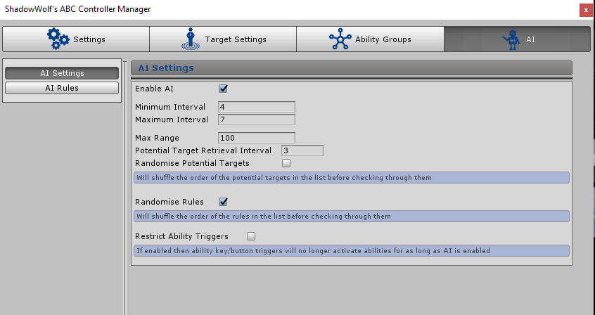

AI Settings
Overview
AI can be setup which will make the entity automatically perform actions in game like activating an ability or activating an ability group. For each AI Rule conditions can be created which will determine if the entity should automatically perform the action or not. For example a rule could be setup to activate a heal ability on objects with a certain tag when their HP is below 50%. Other conditions also include probability rolls for randomness.
Note: Objects are only considered in the AI system if the ABC StateManager is attached, i.e an ability won’t activate automatically on an object without the ABC StateManager component. unless “Activate Without Conditions” is enabled.

Enable AI
Will enable or disable AI. If disabled then the AI system will not run at all for the entity
Minimum Interval
This setting defines the minimum time the AI system will wait for before functioning again. Each time the AI system finishes running it will retrieve a random number between the minimum and maximum interval set. The AI System will then function again after the random time which was just calculated. This allows for the entity to run the AI at different times for a more dynamic effect.
Maximum Interval
This setting defines the maximum time the AI system will wait for before functioning again. Each time the AI system finishes running it will retrieve a random number between the minimum and maximum interval set. The AI System will then function again after the random time which was just calculated. This allows for the entity to run the AI at different times for a more dynamic effect.
Max Range
When the AI system runs it will record all surrounding objects (potential targets) in the range defined in this setting. It will then check its AI rules and conditions against the potential targets found. For example a rule could be setup to activate a heal ability on objects with a certain tag when their HP is below 50%, however it will only check objects HP that are within the max surrounding range. If any objects below 50% HP are outside the range then they will not be considered in the AI system.The greater the range the more processing power required.
NOTE: Only entities with the ABC StateManager component will be considered for AI conditions unless the “Activate Without Conditions” setting is ticked.
Potential Target Retrieval Interval
When the AI system runs it will record all surrounding objects (potential targets) in the max range defined and store them in a list. The list will then be used every time the AI system runs, however The list will clear and re-record all new potential targets after the interval defined in this setting. For example if 5 is set then every time the AI system runs if 5 seconds has passed since the last time the list of potential targets was updated it will clear the list and re-update with any objects found within the max range declared.
Randomise Potential Targets
If enabled then the potential targets recorded for the AI system will be randomised each time it is generated.
Randomise Rules
If enabled then all AI rules setup for this entity will be shuffled before the system checks through them one by one. The system will always start with the rule at the top of the list and will cycle through each rule until it finds one to activate (due to the rule meeting all it’s conditions etc).
Restrict Ability Triggers
If ticked then ability key/button triggers will no longer activate abilities for as long as AI is enabled. Disabling the AI can be done via the Enable AI Setting. If not ticked then both AI and key/button triggers can activate abilities.